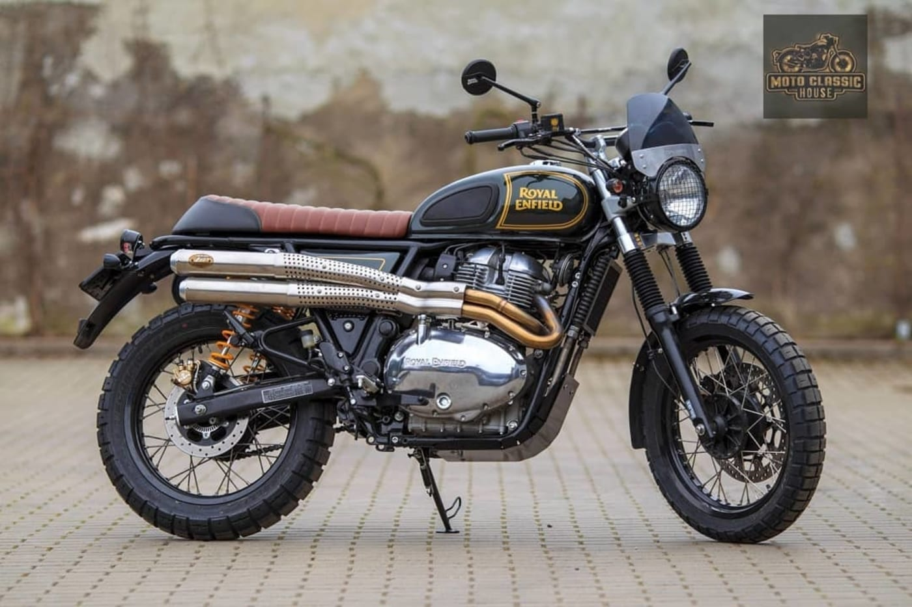

Royal Enfield Classic 350 and Classic 500 are models of Royal Enfield motorcycles which have been in production since 2009.
Both the Classic 350 and the Classic 500 feature the new unit construction engine in their 350cc and 500cc variants respectively. However the Classic 350 uses a carburettor for fuel delivery and the Classic 500 has EFI. The Classic 350 has an ammeter while the Classic 500 has a low fuel indicator light and engine check light instead of the ammeter. The ammeter on the Classic 350 is more of a vestigial remain as the modern Classic 350 has no practical use for it. In the older models with CB points, when the piston was in the top dead centre (CB points closed) then the ammeter would stay in the middle. This feature allowed the rider to use the decompression lever to move the piston to top dead center and kick starter with relative ease. Both of these models are more expensive and targeted at a market segment above the Royal Enfield Bullet 350 and the Bullet 500.